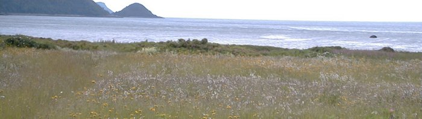

|

Three Founding Families
Through Marie-Anna Caron we descend from three
familles-souches (founding families).
That is, the ancestor of each line arrived in the
earliest days of the colony. They settled in the Quebec City area.
Whatever their reasons, they chose to live in this harsh and
inhospitable land and to raise a family there.
"Necessity knows no law": they had to
adapt quickly, and their children carried on this adaptation to the vast country
in another region, the Bas du Fleuve. They became Canadiens,
the term for people born in New France, as opposed to the French who
came to fill administrative or military posts in the colony for a few years
and then went back to France.
Here is the story of each of them and the family
tree of each line.

 ROBERT CARON
ROBERT CARON
the life of the first ancestor and that of his son Joseph.
ROBERT GAGNON
the life of the first ancestor and that of his son Jean
ANTOINE DIONNE
the life of the first ancestor, his son Jean and
his grandson Augustin

THE BAS DU FLEUVE
The second generation
The first arrivals in the colony were granted land near Quebec City,
at Beauport, on the côte de Beaupré and on the Île d'Orléans. They had
many children; those who did not inherit the family land had to
settle farther away. Many children of the second generation headed for the Bas du Fleuve,
which they would settle. A farming, forestry and
seafaring tradition grew up in this region.

The region called the Bas du Fleuve (the lower St. Lawrence) stretches along the south side of the
St. Lawrence, from Montmagny to Rimouski. It lies between the river and the
Appalachians.
Click the buttons
below to see a brief history and photos of the chosen
area. These villages are all places where our Caron, Gagnon
or Dionne ancestors lived.

 
 
Thanks to Suzanne
and André, we have photos taken from their 2002
holiday album of the region.
|